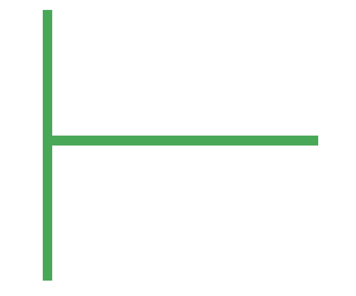
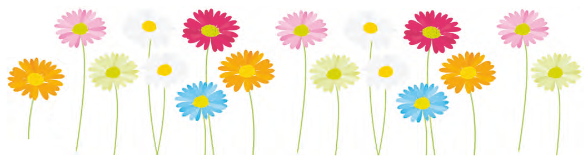

فعّاليت
تقسيم با باقي مانده
۱ــ ۱۷شاخه گل داریم. می خواهیم با هر۴شاخه ی آنها یک دسته گل درست کنیم.
چند دسته گل درست میشود؟
چند شاخه گل باقی می ماند؟
با رسم شکل توضیح دهید.
چند دسته گل درست میشود؟
چند شاخه گل باقی می ماند؟
با رسم شکل توضیح دهید.
٢ــ ۱۷ شاخه گل داریم. میخواهیم آنها را به طور مساوی در۴ گلدان تقسیم کنیم. شما گلها را یکی یکی در گلدانها بکشید. این کار را ادامه دهید تا همه ی گلها به تعداد مساوی در گلدان ها قرار گیرند.
در هر گلدان چند گل قرار می گیرد؟
چند گل باقی می ماند؟
در هر گلدان چند گل قرار می گیرد؟
چند گل باقی می ماند؟
+
-
+
-
+
-
+
-
برای حل کردن مسئله ی بالا می توانیم از نماد استفاده کنیم و پاسخ را به صورت زیر بنویسیم:
۱۷
- ۱۶
______
- ۱۶
______
۱
۴
خارج قسمت← ۴
← باقی مانده

145